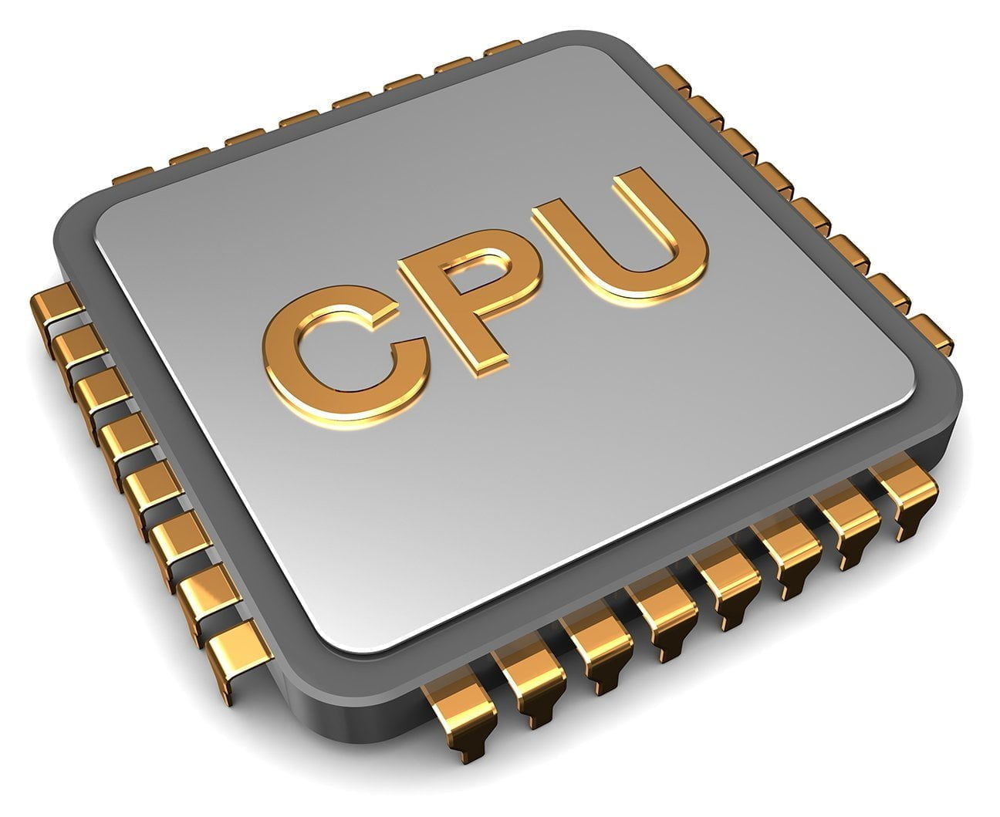

De fysieke laag is een van de drie lagen van het drielagenmodel en vormt de basis van alle computers. De fysieke laag verwijst naar de hardware, in tegenstelling tot de toepassingslaag en de logische laag, die betrekking hebben op de software. Hardware zijn de 'zichtbare' onderdelen van uw computer, zoals uw scherm, de computerkast, de laptop en de harde schijf in de computer. Software, dat zijn de 'onzichtbare' onderdelen, zoals de programma's en apps die u installeert. Onder de fysieke laag valt dus bijvoorbeeld de beeldscherm van je telefoon en de geheugen van je telefoon. Laten we dieper ingaan op de fysieke laag
Een belangrijk onderdeel van de fysieke laag is de processor. Dit wordt de CPU genoemd. Het is de brein van een computer. De CPU wordt in het Nederlands de centrale verwerkingssnelheid genoemd. Het verteld alle onderdelen van een apparaat wat ze moeten doen. Een belangrijk kenmerk van het CPU is de kloksnelheid. Dit wordt gemeten in GHz (gigahertz) en verwijst naar het aantal cycli per seconde dat de processor kan uitvoeren. Een hogere kloksnelheid betekent dat de processor meer instructies per seconde kan verwerken. Naast kloksnelheid heb je ook nog verwerkingskracht die uiteindelijk het verwerkingssnelheid bepalen. Dit wordt gemeten in mips. Hoe meer mips hoe meer taken tegelijkertijd kunnen worden uitgevoerd.
Een ander belangrijk onderdeel van de fysieke laag is het geheugen. Zo heb je RAM (random acces memory). Dit is het werkgeheugen van een laptop. De CPU en RAM hebben een verband met elkaar. De CPU stuurt als het ware een adres naar de RAM waarbij het controlbus aan komt te staan. Vervolgens worden de gegevens van de de adres via de databus teruggestuurd naar de CPU. De CPU verwerkt de gegevens en stuurt de uitkomst weer naar RAM via het de databus. Via de adresbus wordt aangegeven op welk adress de gegevens opgeslagen moeten worden. RAM is volatiel, wat betekent dat het alleen gegevens vasthoudt zolang de computer aanstaat. Zodra de stroom wordt uitgeschakeld, worden de gegevens in RAM gewist. Het aantal gegevens dat tegelijkertijd kan worden verwerkt is belangrijk voor multitasking en zware applicaties zoals videobewerking of gamen. Naast RAM heb je ROM (read-only memory). ROM is de permanent geheugen dat wordt gebruikt om instructies op te slaan die nodig zijn om de computer op te starten. Naast RAM en ROM heeft een computer ook permanente opslag om langdurig gegevens op te slaan. Dit omvat onder andere: harde schrijven, solid state drives en optische scrhijven (dvd's, cd's en USB-drives).
Ten slot wil ik het nog over de randapparatuur hebben. Randapparatuur is ook wel de verzamelnaam voor apparaten rondom je PC of laptop. Dit omvat bijvoorbeeld invoerapparaten zoals toetsenborden en muizen. Daarnaast vallen uitvoerapparaten zoals monitors en printers ook onder randapparatuur. En als laatst heb je nog opslagapparaten zoals externe harde schijven en USB-sticks die ook tot randappartuur worden gerekend. Alles wat voor invoer zorgt, bevat sensoren. Deze sensoren krijgen signalen van de buitenwereld en hebben als funtie om iets te meten. Naast sensoren heb je ook actuatoren. Hierbij gaat het niet om invoer, maar om output. Een actuator is een toestel dat invloed kan uitoefenen op zijn omgeving. Het digitale signaal dat ze krijgen zetten ze om naar een analoog signaal.